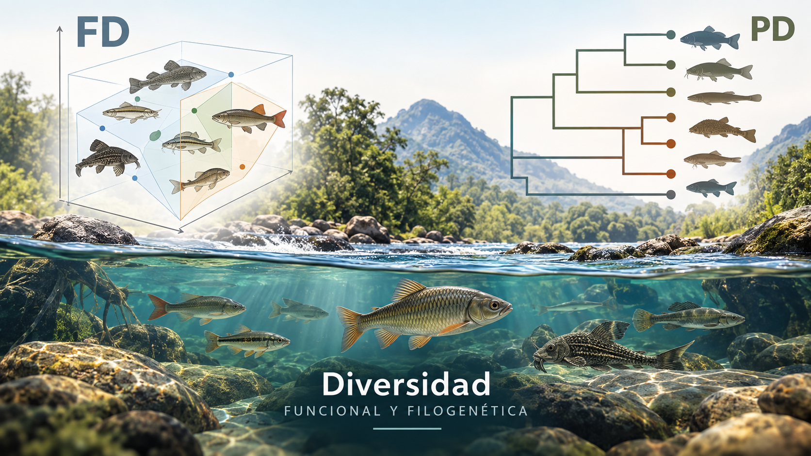

Repositorio de Talleres de Diversidad Multidimensional - 2026
Programa de Biología - Universidad del Magdalena

Resumen
Repositorio de Clases y Actividades de Diversidad Multidimensonal - 2026
Javier Rodríguez-Barrios
Programa de Biología
“Actualizado: 2026-09-06”
El siguiente documento es un compendio de temas vistos en el componente teórico y práctico de la asignatura de Diversidad Multidimensional, durante el periodo 2026. Se fundamenta en cinco grandes módulos:
A1. Estimadores clásicos de diversidad funcional (FD) y filogenética (PD) (Villéger et al., 2008).
A2. Entropía cuadrática de Rao y partición α–β–γ (Rao, 1982).
B1. Números efectivos de Hill para diversidad funcional alfa (Chao et al., 2021).
B2. Números efectivos de Hill para diversidad funcional beta (Chao et al., 2023).
A1 - A2 - B1 - B2. Integración multidimensional de TD, FD y PD.
A partir de ello, el enfoque de este trabajo, consiste en ofrecer a los estudiantes una compilación de los materiales entregados durante la asignatura, como videos de las clases y talleres de cómputo, por lo que este documento se constituye en un repositorio de los materiales vistos en clase.
Para un mejor entendimiento de este documento, se sugiere complementar la información con las referencias bibliográficas sugeridas en cada capitulo descrito a continuación.